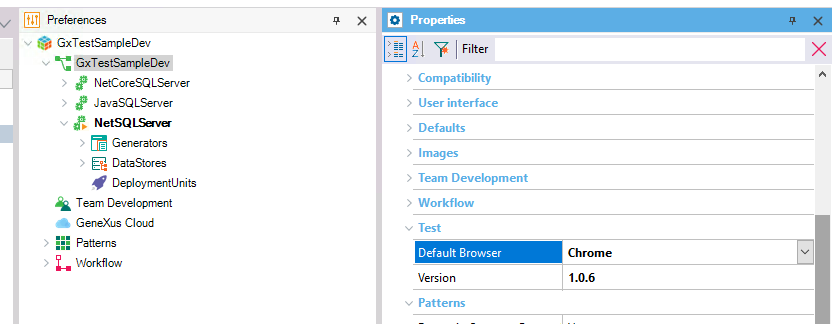
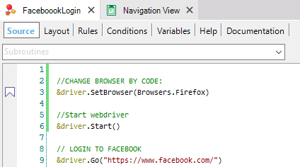

Browser type needs to be defined before the &driver.Start() sentence, using the Browsers domain included in your KB when GXtest is installed. Possible values to use are Chrome, Firefox, Edge Legacy, Edge (Chromium) and IE. By default, each KB has a Default Browser property that will be used for all test executions. So, if you have no specific browser type defined by code, you can just change this value:  This is the recommended way to do it. On the other hand, if you want your test to use a specific browser type, you can change this value by code using the SetBrowser command, and Browsers domain to choose the value. Just remember to do it before "Start" sentence:  |
| Backlinks | ||
| Toc:GXtest v4 | GXtest v4 Licensing | GXtest v4 Licensing (GeneXus 17 upgrade 2 and prior) |